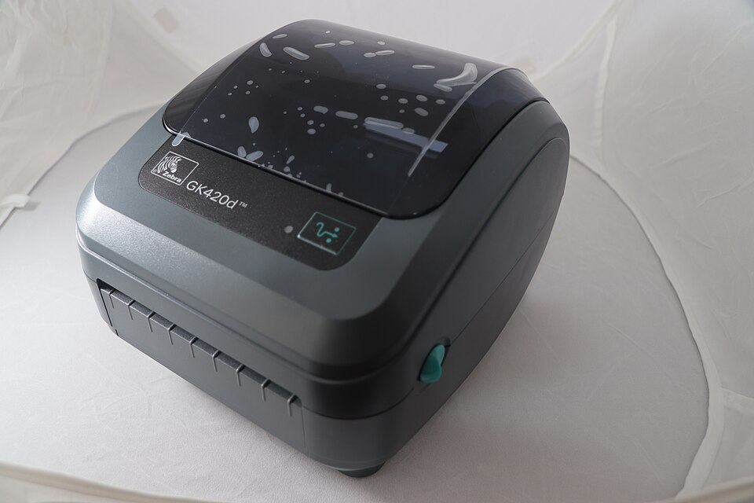

Repair a barcode printer that skips labels or prints streaks
Use a standalone report, matching media and scanner proof to distinguish the printer from the host application.
Locate the paper path and consumables
A direct thermal printer heats coated material. A thermal transfer unit uses a ribbon to transfer ink to the label. In both, the platen roller supports and drives the media under the head. The media sensor tells the printer where one label ends and the next begins, using a gap, notch or black mark that matches its setup.

Photo by Jiří Sedláček, resized. Original photo · CC BY-SA 4.0.


Photo by Jiří Sedláček, resized with labels added. Original photo · CC BY-SA 4.0.

Watch the media path and sensor on a ZD421-family printer · Find the movable sensor, then find the test controls on your actual unit. The photos show a GK420d, so use the video sequence only for the models it names. Zebra media loading · Zebra manual media calibration.
Use the printer’s own report before changing the driver
Use an owned or training unit with its intact approved external adapter. Record roll type, width, gap or mark, ribbon type if present and current settings. Use non-customer data and ordinary label stock. Print the model’s built-in configuration or quality report with the host application out of the test. Keep it as the baseline.
If the printer skips labels in its own feed cycle, line up the guides and inspect the gap or mark sensor and correct media mode. Follow the model’s media calibration with the cover closed when the manual requires it. On the ZD421, follow the official SmartCal guide before resorting to the model’s manual calibration. Repeat with known-good, compatible media.
For a streak that stays in the same position, switch off and disconnect the printer, let the head cool, and use the manufacturer’s approved platen and printhead cleaning procedure. Repeat with known-good media. A streak remaining at the same column on the built-in report after cleaning warrants printhead or connection inspection under the exact service procedure. A mark repeating along the feed direction also warrants a roller inspection.
If the report and feeding pass, print the same label from a clean test template, then compare with the application’s label size, print method and offsets. A working built-in report rules in the parts of the print path it exercised. It can coexist with a host or data fault.
Zebra ZD421 service resources · Zebra desktop printer cleaning.
Learn the actual cleaning and platen replacement sequence for a ZD421D in P103. Take A/B print samples so a recurring roller mark can be compared with the fixed line from a head defect.
Produce a handover sample a warehouse can test
Agree the stock and template. Print 20 consecutive training labels, record any skip, and check alignment and the expected decoded data with the scanner at the client’s actual station or with an equivalent bench scanner. A successful scan is a functional check. Barcode grading requires a verifier and the customer’s acceptance standard. Quote separately for an approved replacement printhead and a job that only needs media setup or cleaning. GS1 guidance on measuring barcode quality.